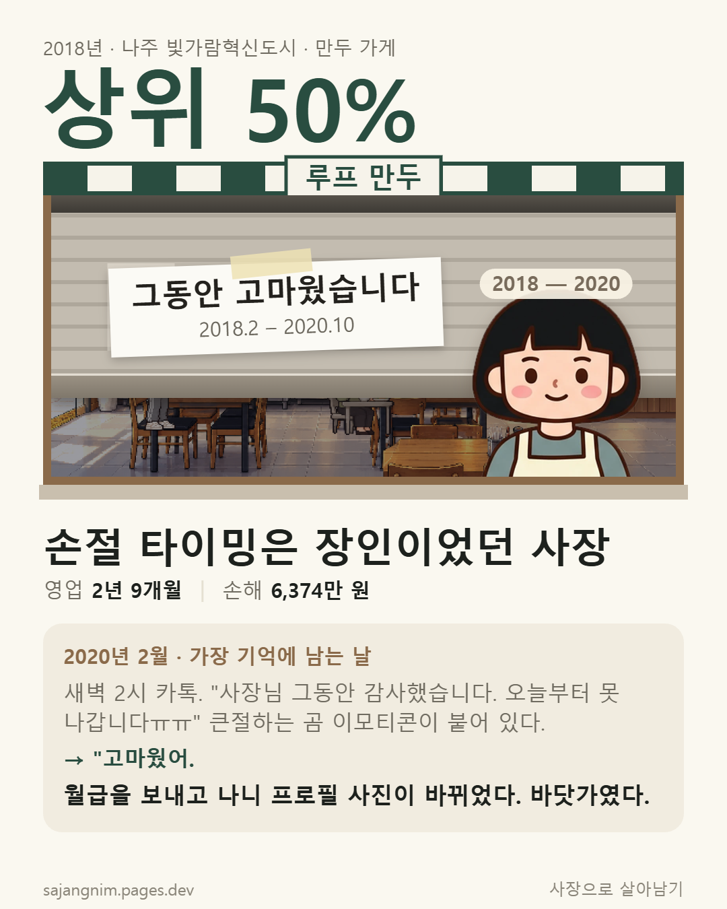

카페 하고싶었는데 선택이 안 되서 강제로 만두가게 오픈 당하고 8배속 돌려놨더니 손실만 보다가 장사 때려침

카페 하고싶었는데 선택이 안 되서 강제로 만두가게 오픈 당하고 8배속 돌려놨더니 손실만 보다가 장사 때려침
힘내라 잘되길 바람
겜 혼자만 하네
힘내삼
폐업지원금 잘 알아보고
나도 폐업 두번정도 했는데
폐업해서 마이너스되더라도
빨리 터는게 오히려 돈버는거같더라
저기서 붙잡고 있어도 코로나 ㄷㄷ
아득바득 버티는 중
은행 빚 있으면 폐업도 쉽지가 않더라
뭔겜임
폐업하기 게임이래!
나주혁신도시 여기 미래는 있는거임?
마포구에서 오락실 사장해서 20년간 7억 벌고 자식한테 물려줌...ㅋㅋㅋㅋㅋ
할배요.
상위 14% 목표 달성하고 칼퇴한 사장
영업 10년
남긴 돈 577만 원
평균 매출이 300인데 빚만 몇천갚고 끝이네.. 뭐 10년 내내 한산하고 몸도 여유였으니 어쩔수없나? 장난감용품점했는데 소매상이 개씹날먹직이긴한듯
나도 올해가 고비같은데 서글프당